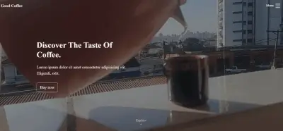

Projetos

Netflix Landing Html Css.
O projeto Netflix Landing é uma página web que busca replicar o layout e estilo visual da página utiliza HTML e CSS para criar uma interface atrativa e responsiva.
Operações CRUD do JS.
O projeto Operações CRUD (Create, Read, Update, Delete) com HTML, CSS e JavaScript é uma ótima oportunidade para praticar habilidades de desenvolvimento web.

Landing Page Bootstrap 5.
O projeto Landing Page Bootstrap 5 é um projeto de desenvolvimento web que envolve a criação de uma página inicial atraente e responsiva utilizando o framework Bootstrap 5.